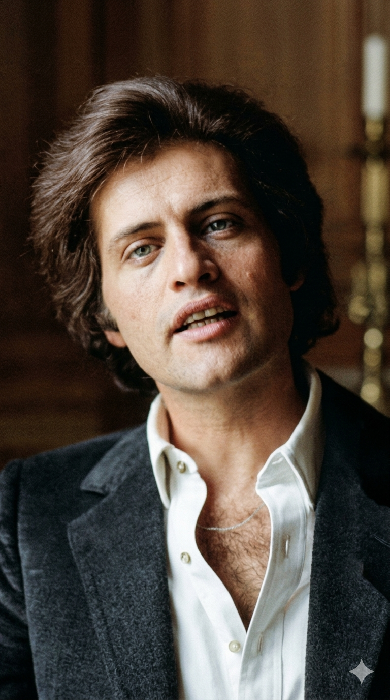

ג'ו דאסן
Joseph Ira Dassin
מחקר אטימולוגי ומשמעות השמות
ג'וזף (Joseph)
זהו שמו הרשמי הראשון, גרסה אנגלית לשם העברי יוסף. מבחינה אטימולוגית, השם נגזר מהשורש המקראי "י.ס.ף", המופיע בספר בראשית כאשר רחל אימנו אומרת: "יוסיף ה' לי בן אחר". השם מסמל תקווה להמשכיות, צמיחה כלכלית ורוחנית, ואת יכולתו של האדם לעלות ממעמקי הבור (כמו יוסף המקראי) לעמדת כוח והשפעה.
איירה (Ira)
שמו האמצעי הוא שם עברי עתיק (עירא). פירושו המילולי הוא "ערני", "שומר" או "נמרץ". בתנ"ך, עירא היאירי היה כהן וגיבור קרוב לדוד המלך. בחירת שם זה מעידה על הרצון של משפחתו להעניק לו חדות מחשבתית וערנות אינטלקטואלית, תכונות שליוו את ג'ו בלימודיו האקדמיים המבריקים.
דאסן (Dassin)
השם "דאסן" הוא למעשה עיר אוקראינית שהפכה למילה. סבו, סמואל, הגיע מאודסה לנמל ניו יורק בחיפוש אחר חיים חדשים. כשהפקיד שאל "What is your name?", הסבא, שלא ידע אנגלית, חשב ששואלים אותו מאיפה הוא בא וענה: "D'Odessa" (מאודסה). הפקיד רשם את הצליל כ-Dassin. כך נוצר שם משפחה שאינו קיים בשום מקום אחר בעולם, הנושא בתוכו את המיתוס של המהגר היהודי המצליח.
ילדות בצל הוליווד והרדיפה המקארתיסטית
הוליווד של הזהב: ג'ו נולד בברוקלין ב-7 בנובמבר 1938. אביו, ז'ול דאסן, היה כוכב עולה בבימוי הוליוודי, ואמו ביאטריס הייתה כנרת מהשורה הראשונה. כילד בלוס אנג'לס, ג'ו גדל בתוך אולפני הצילום, כשהוא מוקף בבמאים, תסריטאים ושחקני ענק.
הגלות הכפויה (1950): השבר הגדול הגיע כשהיה בן 12. אביו הוכנס ל"רשימה השחורה" בגלל חשד לקומוניזם בתקופת המקארתיזם. הקריירה שלו נמחקה בין לילה. המשפחה נאלצה לברוח מארה"ב בחוסר כל להמשך חיים כפליטים פוליטיים באירופה. ג'ו נאלץ ללמוד ב-11 בתי ספר שונים במדינות שונות (צרפת, שווייץ, איטליה), מה שגרם לו לתחושת חוסר שייכות אך העניק לו שליטה מושלמת בשפות ותרבויות.
הדוקטורט והעבודה השחורה: לאחר גירושי הוריו, חזר ג'ו לארה"ב כדי ללמוד באוניברסיטת מישיגן. הוא היה תלמיד מחונן והשלים דוקטורט באנתרופולוגיה. כדי לממן את עצמו, הוא לא הסתמך על שם אביו ועבד כנהג משאית, טבח וסדרן. היכרות זו עם "האדם הפשוט" היא שאיפשרה לו מאוחר יותר לשיר שירים שחדרו לכל בית בצרפת.
אידאולוגיית המקצוענות והישגי ענק
הפרפקציוניזם המוחלט: בניגוד לשאנסונרים המבוהמים של פריז, ג'ו דאסן הביא איתו את מוסר העבודה האמריקאי הקשוח. הוא ראה בשירה "עבודה" ולא רק "השראה". הוא היה ידוע כמי שמקליט משפט אחד בשיר 70 או 80 פעם עד שהיה מרוצה מהדיוק הפונטי. עבורו, הקהל היה קדוש והוא היה חייב לספק לו מוצר מושלם.
תקליט היהלום
היה האמן הראשון בצרפת שקיבל תקליט זהב על סינגל, ומכר למעלה מ-50 מיליון עותקים בכל העולם, הישג בלתי נתפס לאמן ששר בעיקר בצרפתית.
הגשר לרוסיה
היה אחד האמנים המערביים הבודדים שזכו להערצה מטורפת בברית המועצות מאחורי "מסך הברזל", והפך לסמל של חופש עבור מיליונים.
הטרגדיה בשיא התהילה: בשנת 1980, בגיל 41 בלבד, לבו של ג'ו דאסן הכריע אותו. הוא לקה בהתקף לב קטלני בזמן סעודה בחופשה בטהיטי. מותו הפתאומי גרם לאבל לאומי בצרפת והפך אותו באופן מיידי לאגדה של רומנטיקה ונוסטלגיה.
היצירות המופתיות (יוטיוב)
• מקורות למחקר המעמיק:
- Joe Dassin: Inconnu et fascinant (2010) - ביוגרפיה מקיפה מאת מארי-פראנס ברייר הכוללת עדויות של מקורבים.
- ארכיון הקולנוע הצרפתי (Cinémathèque Française) - תיעוד פעילותו של אביו, ז'ול דאסן.
- L'Été indien: La genèse d'un tube - מחקר על תהליך ההפקה הפרפקציוניסטי של דאסן באולפן.
- ארכיוני ה-FBI והגירה באליס איילנד - תיעוד מקור שם המשפחה ורדיפת המשפחה בשנות ה-50.
- Le temps des chansons - תיעוד ראיונות רדיו של דאסן לאורך הקריירה.